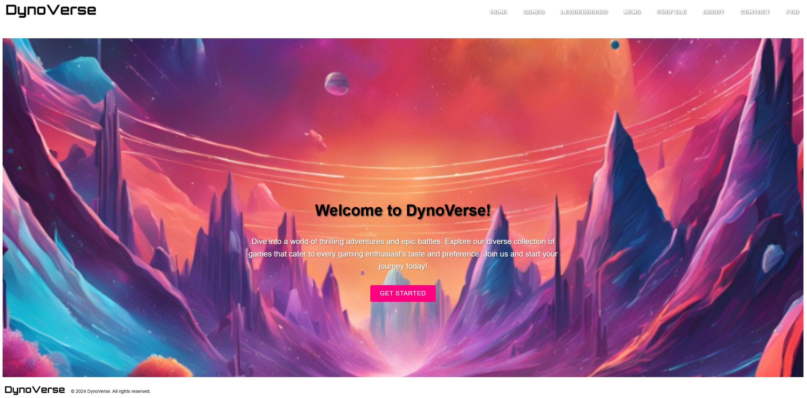

Netflix Exploratory Data Analysis (EDA) using
Python
Exploratory Data Analysis on the Netflix dataset to uncover patterns, trends, and insights related to content distribution and popularity.
Explore my work and see how I transform complex data into clear, actionable strategies. @nooraimiasyikinmz
Exploratory Data Analysis on the Netflix dataset to uncover patterns, trends, and insights related to content distribution and popularity.
Exploratory Data Analysis on the social media dataset to extract insights about the platform's user base, content interests, and engagement behavior.
Retail sales data analysis to uncover trends, patterns, and profitability insights from a Superstore dataset.
Clustering techniques are applied to segment species based on various features, providing insights for biological research.
Cluster analysis on country-based data is performed to generate heatmaps and dendrograms for visualizing similarities and differences between countries.
Building regression models to predict marketing campaign success for a Portuguese bank using customer data.
Machine learning techniques are applied to analyze real estate data for price prediction and trend analysis.
Create interactive dashboards showcasing findings using pivot tables, formulas (V-LOOKUP and others), data validation and conditional formatting.
Interactive dashboards built to visualize data insights effectively for making informed decisions about employee attrition.

DynoVerse is a web-based platform designed to provide users with information and updates about various games.